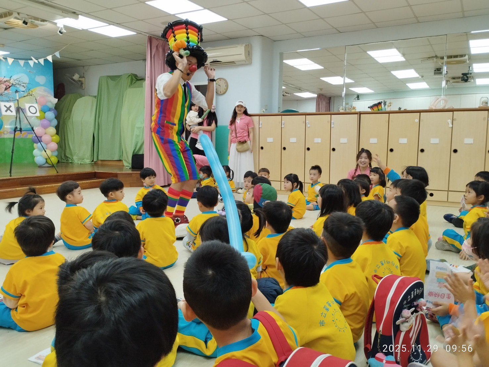
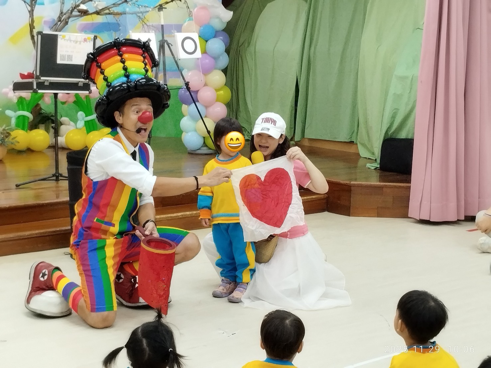
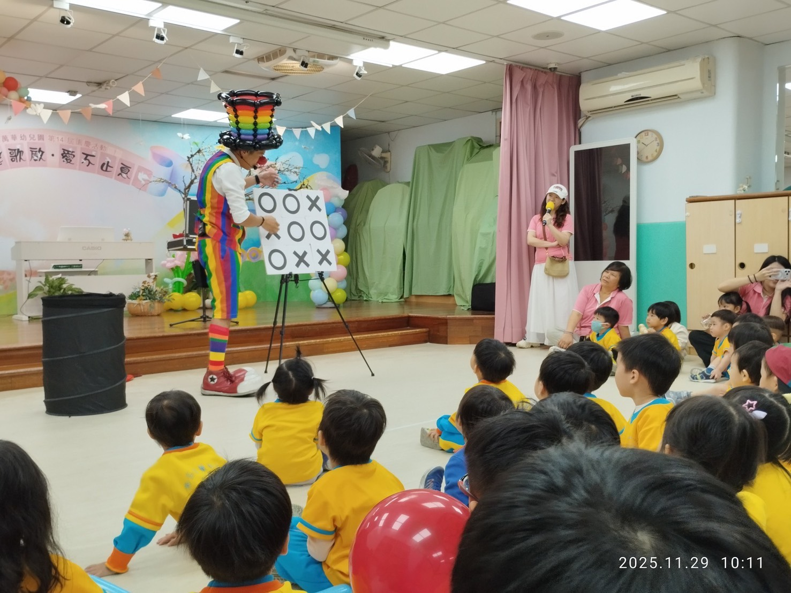

2025 萬華幼兒園園慶紀錄｜氣球魔術 × OX 遊戲揭幕驚喜
高張力舞台互動秀｜在第 14 屆園慶典禮，用魔法點亮孩子的笑容
📍 地點：臺北市立萬華幼兒園
園慶盛事：繽紛氣球魔術熱鬧開場
在 臺北市立萬華幼兒園 歡慶第十四屆園慶的重要日子裡，氣球大叔 Sony 受邀擔任現場演出嘉賓。Sony 身穿招牌的繽紛彩虹服裝登場，以幽默活潑的對話迅速與孩子們建立連結。不同於傳統魔術，Sony 巧妙地將氣球藝術與魔術結合，讓整個園慶空間瞬間轉化為充滿奇蹟的互動劇場。

情感連結：全員互動「紅心魔術」
演出中段進入了最溫馨的環節——紅心魔術。Sony 邀請現場孩子與老師共同上台，透過簡單卻具視覺感染力的氣球小道具，讓「愛與分享」的訊息隨氣球在場內流動。這段表演讓園慶活動不只是觀賞，更成為親師生共同參與的情感體驗，獲得家長們極高的評價。

壓軸震撼：客製化 OX 遊戲揭幕奇蹟
表演的最高潮是氣球大叔 Sony 專為慶典設計的「OX 遊戲魔術」。在壓克力棋盤上隨機擺放的 O、X 標記，在最後揭曉時刻，竟然不可思議地拼成了完整的「生日快樂」大看板！這種結合懸念與主題驚喜的設計，讓全場爆出熱烈歡呼，為園慶畫下完美的句點。


結語：為校園慶典注入「魔法人氣」的專家
氣球大叔 Sony 具備豐富的 公私立幼兒園、非營利機構 演出經驗。我們擅長根據「校慶、園慶、畢業典禮」的主題，客製化魔術揭幕與互動環節。不論場地大小，Sony 都能以職業級的控場能力與視覺魔法，為您的校園活動創造最高人氣。
如果您正在規劃幼兒園園慶、畢業典禮、校園節慶或親子同樂活動，也歡迎直接參考大叔的 親子互動魔術秀 服務介紹。除了氣球魔術橋段之外，也能依主題需求搭配孩子上台互動、客製化揭幕設計與定點造型氣球，讓整場活動更有驚喜感與記憶點。
🔥 更多幼兒園與官方大型活動推薦案例：
- 👉 畢業季首選：桃園中堅幼兒園｜畢業典禮驚喜氣球魔術秀
- 👉 官方大型活動：台北納涼電影院｜市府民政局官方魔術互動演出
- 👉 專業教育宣導：基隆幼兒園 SDGs 永續教育｜魔術互動與教學紀實
- 👉 校園餐敘紀錄：龍潭康橋幼兒園｜親子餐敘氣球迎賓與魔術秀
💡 關於台北幼兒園氣球魔術表演的常見問題
- Q: 在台北地區舉辦幼兒園園慶或畢業典禮，氣球魔術表演通常適合哪個年齡層的孩子？
- A: 氣球大叔 Sony 的表演專為幼兒園設計，內容適合 3 到 6 歲的孩童。我們透過色彩鮮豔的造型氣球與簡單易懂的互動魔術（如紅心魔術），能瞬間抓住小小孩的注意力，讓小班到大班的孩子都能全程高度參與，享受充滿歡笑的派對時光。
- Q: 幼兒園活動的空間通常有限，氣球大叔的魔術表演需要多大的場地？
- A: 完全不需要擔心場地大小！氣球大叔具備極高的演出機動性，無論是幼兒園的室內活動室、中庭廣場或是較小的教室，只要保留約 2x2 公尺的腹地讓孩子們能安全圍坐，就能將日常空間變成充滿奇蹟的微型舞台，並自備專業行動音響。
- Q: 像「OX 遊戲揭幕」這種客製化魔術，可以配合我們幼兒園的特定主題嗎？
- A: 當然可以！這正是我們的特色之一。無論是建園週年慶的「生日快樂」、畢業典禮的「鵬程萬里」，或是萬聖節、聖誕節等特殊節慶，我們都能透過客製化的魔術道具（如拼圖或看版）為活動創造專屬的驚喜揭幕，讓親師生留下深刻印象。
🎈 正在尋找台北幼兒園氣球魔術表演嗎？
如果您也希望為您的活動創造像現場一樣爆棚的人氣與驚喜，氣球大叔 Sony 是您的首選！我們專注於提供高品質的互動演出與情境佈置：
- 校園節慶活動：幼兒園畢業典禮、校慶園慶、兒童節同樂會。
- 品牌行銷推廣：新品發表會、門市開幕、VIP 客戶派對。
- 親子家庭日：企業家庭日、社區晚會、私人慶生派對。
📅 本文整理於 2025 年 11 月 29 日，完整紀錄真實活動現場氛圍。